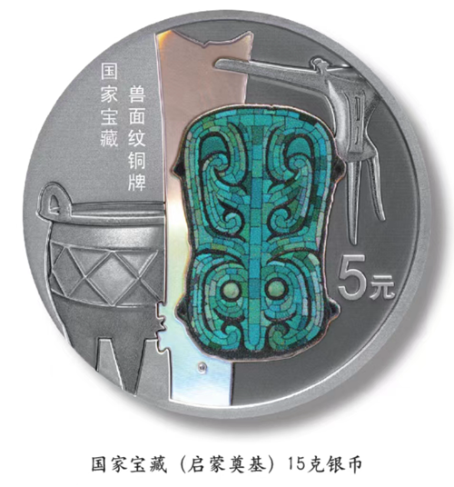
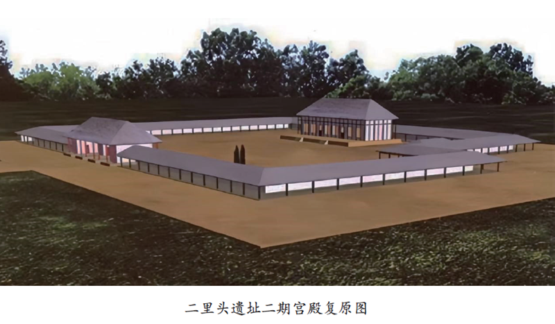
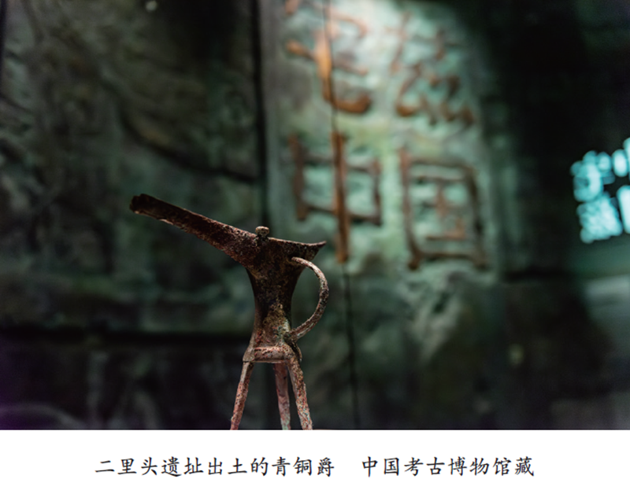
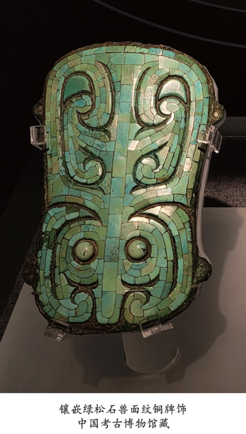

嵌绿松石兽面纹铜牌饰
- 
- 在近期发行的国家宝藏（启蒙奠基）金银纪念币中，有一枚15克银币以镶嵌绿松石兽面纹铜牌饰作为主要设计元素，牌饰中的动物形象经过了艺术化加工。这一设计元素的原型文物出土于著名的二里头遗址，在这里，大量重见天日的文物向我们揭示了约3500年前中原地区的文明密码。
- 探源二里头
- 1899年甲骨文的发现和1928年安阳殷墟的发掘，证实了《史记·殷本纪》所载殷商的存在，这也引出了《史记·夏本纪》同样是信史的认识。由此，20世纪50年代考古界提出了夏文化探索的课题。1959年夏，中国著名考古学家徐旭生先生率队在豫西进行“夏墟”调查时，发现了二里头遗址，从此拉开了夏文化探索的序幕。考古工作者对二里头遗址数十次的考古发掘取得了一系列重大收获。1977年，夏鼐先生根据新的考古成果，又将这类文化遗存命名为“二里头文化”。
- 
- 
- 二里头遗址的年代跨度，上至距今约5000年的仰韶文化和龙山文化，下至东周、东汉时期。目前的研究成果认为，二里头遗址的兴盛时期可以分为四期：一期的年代为公元前1750年至公元前1680年。由于破坏严重，它究竟属于一个大型聚落，抑或是由数个聚落组成的大遗址群，尚不得而知。目前，已在遗存中发现青铜工具、象牙器、绿松石器等规格较高的器物和刻划符号，这说明此时期的二里头遗址很可能已是较大区域内的中心聚落。二期的年代为公元前1680年至公元前1610年。从第二期开始，二里头都邑进入了全面兴盛的阶段，其城市规划的大格局已基本完成。在这里，发现了两横两纵、构成“井”字形的四条大道，还发现了两座大型宫殿。其中一座面积约2800平方米，院内有四排互相平行的房屋，彼此之间以夯土宅墙隔开。另一座面积更大，院落内推测有三排房屋，由于基址破坏严重，目前难以复原。三期的年代为公元前1610年至公元前1560年。此时的宫殿放弃了二期时密集成排的房屋格局，改为在空旷的大院中央偏北位置设置孤立的主体殿堂，这反映出十足的王者气象。四期的年代为公元前1560年至公元前1520年。这一时期，二里头经历了重大变故，宫墙开始坍塌，宫殿逐渐被废弃，宫殿院落中出现了与二里头原住民风格迥异且等级较低的器物，似乎向我们暗示着二里头被外族入侵了。
- 入侵二里头的究竟是什么人？如果我们把二里头二期、三期认定为夏，那四期的入侵痕迹是否就是商灭夏的痕迹呢？这便引出了关于二里头所属年代的争议。关于二里头遗址与夏文化之间的关系，目前学界有两种意见：一种是二里头一期至四期均为夏文化，四期的部分时期或者全部为夏遗民遗迹；另一种意见认为遗址的一期、二期是夏文化遗址，三期、四期是商汤都城的遗址。究竟哪种观点才更接近真实发生的历史？这就需要进一步发掘和研究后才能解答了。
- 绿松石器的背后
- 二里头清晰地展示了这一时期中华文明在城市和冶金方面取得的成就，特别是在青铜冶炼方面，二里头遗址证明了中国在此时进入了青铜时代。
- 国家宝藏（启蒙奠基）15克银币中所展示的这件镶嵌绿松石兽面纹铜牌饰，反映着二里头人与冶金的关系。绿松石是铜和铝的磷酸盐矿物集合体，绿松石要形成矿，第一必须有铜，第二要有磷，第三要有水。考古工作者曾在二里头遗址二期中发现了一件全长约70厘米的绿松石龙形器，该器由2000多片细小的绿松石组成，呈现游动的龙形，这种器物是二里头高等级贵族身份的标志。
- 到后来，二里头显贵的身份象征由大型游龙变成了手掌大小的铜牌饰，即纪念币上所呈现的类别。同类牌饰目前已发现十几件，大小相近，纹样各异。起初，考古工作者并不能确认这类牌饰上装饰的动物究竟是什么，但根据前述的绿松石游龙判断，铜牌上装饰的应该也是龙。
- 绿松石器的出现，反映着二里头人所生活的社会已经出现了明显的贫富差异和阶级差异，同时也说明二里头社会组织的复杂程度达到了一个新的水平，社会分工更加复杂，而复杂的分工协作体系也为青铜产业的发展奠定了基础。青铜产业需要从采矿、运输、冶炼到配比合金、制范铸造等一系列的专门技术，以及众多人员和组织的协作，复杂社会所驾驭的青铜产业也有助于反哺社会的发展。一个很有趣的现象是，在青铜出现之前的1000多年里，石器时代的古国王权难以繁荣超过200年，其中一个重要的原因就是王权并没有凌驾于民众阶层之上的武装优势，而掌握了青铜技术的二里头则大为不同。考古发掘证明，在三期时，二里头已进入古国盛极而衰的节点，统治者营建了奢华的大型宫殿和规模盛大的城墙。但与二期相比，三期的聚落面积并没有扩大，这说明人口没有明显增长，增加的劳役必然会摊派到没有增长的人口上，底层人群极其贫困，且面临着无休止的劳役，矛盾终将爆发。但是，手持青铜兵器的二里头贵族有效地压制了底层人民的反抗，王朝得以续命。
- 
- 其实从纪念币之上的这件绿松石器中，我们还可以看到更多的文化内涵，这也为这枚纪念币赋予了更加厚重的文化价值。比如掌握青铜技术的二里头贵族，实现了从氏族聚落向王权社会的过渡。发现了绿松石与铜矿关系的二里头人，成功制出了大量的青铜礼器，比如纪念币上展示的青铜爵、青铜鼎等。关于青铜爵的礼器属性，孙机先生在《说爵》一文中已进行了翔实的论证，本文不再赘言。关于青铜鼎，二里头所见的方格纹铜鼎，也说明了中原地区龙山文化晚期向早期国家过渡过程中的文化传承。在二里头人的礼仪体系中，玉也是一个不可或缺的板块，纪念币中所展示的玉璋便是“六器”之一。这些青铜礼器也反映着二里头贵族首领所独具的军事权、祭祀权等。又比如绿松石牌饰上所刻画的动物形象，反映着二里头人的精神信仰。石峁古城为数不多的龙形象，也在二里头得到了传承，并被发扬光大。当然，由此也将牵出更多的问题，如石峁与二里头的关系、中国龙图腾在夏以前的传播路径等，由于篇幅有限，只得在未来另寻机会继续探讨。寻找华夏文明的密码是一件无止境的事业，二里头的发掘在一定程度上解答了关于夏和早商的一些问题，但终点仍远，我们应继续低头向前。